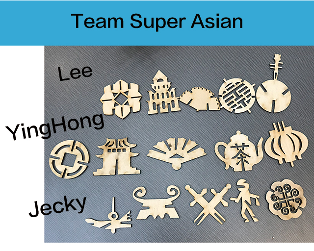
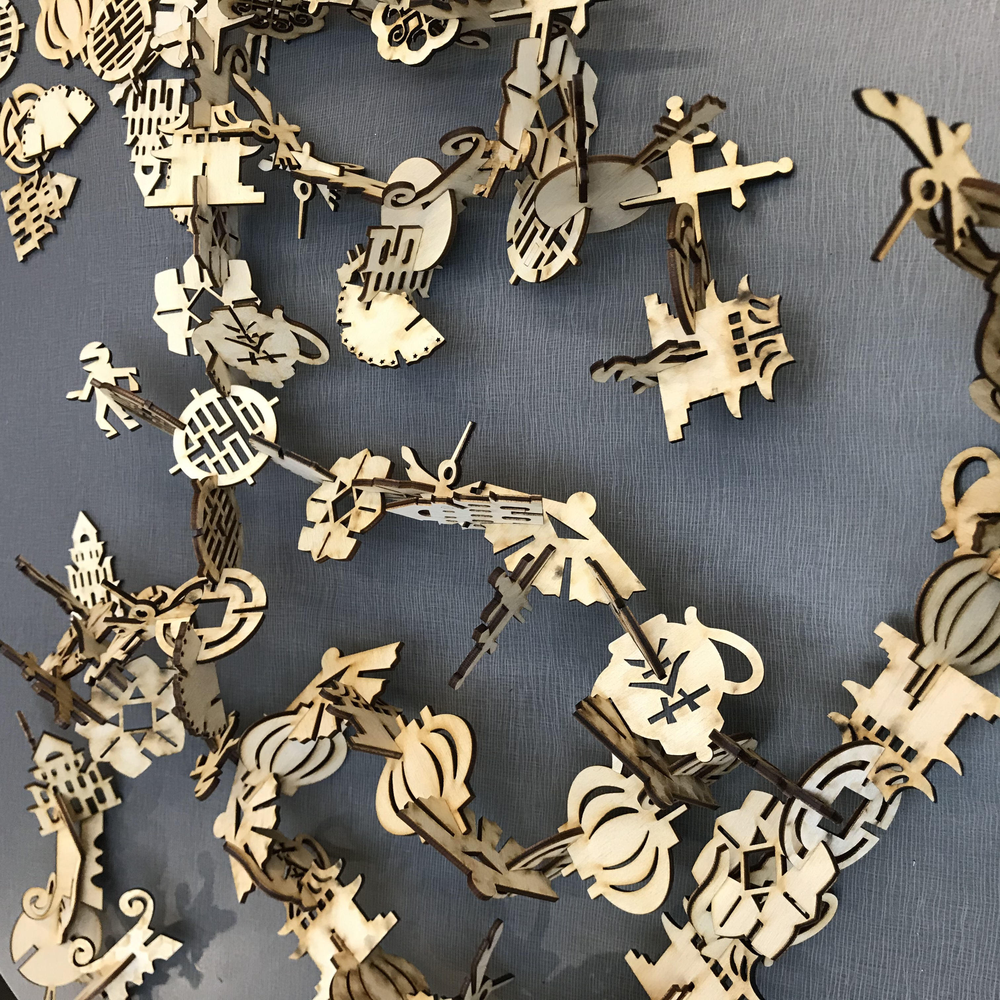

Phase 1: Phase 1 -- Introduction, Reading and Simple Tesselation Exercise
Design Set 1: is to be just made to work with its self and therefore will not work with others.
Design Set 2: have the same design as Design Set 1, except that at least one side of the shape needs to be an agreed upon standard between the partners in the group.
In this project, my team members are Lee and Jacky. I made two different designs, one is independent, the other is one side can contact with my team members. We have negotiated to take the wave as the final "merge item" side, which makes our design convenient. Although at the beginning of this project, we had errors in size control because of our independent design, but later we solved this problem very well.
Phase 2: Testing Model
First Try Designs
In the second stage, each of us made our own design and used laser cutting. My first design was inspired by the concept of galaxies and stars, using notch design and laser cut with wood. But because I calculated the thickness of the wrong wood, my design was not perfect. The second design is a cub cut with acrylic, which is also a notch design. These bears are relatively single, but they can connect well with each other and stand up.
Jecky is assembled with abstract and random design, using puzzle and notched joint design, and finished with wood cutting. Lee's design is made of wood and acrylic. His first design is to connect each piece with a notch, while his second design is to connect each piece with a plate puzzle.
Try Again Designs

I also used the puzzle method to design a wood cutting with my own name. This attempt makes me feel very interesting. How to design these letters to look like letters independently, and it's a challenge for me to connect them without ruin any single letter.
5 Designs for final
The first pattern is the shape of Chinese traditional folding fan after opening. In this project, it symbolizes the development of scholars, that is, culture. The second pattern is the shape of an ancient Chinese city gate, which is the entrance and exit of many ancient Chinese towns. In this project, it represents the construction of the city. The third pattern is the ancient Chinese copper plate, which is simply explained as money. In this project, it symbolizes money for purchase. The fourth pattern is Chinese lantern, a kind of festive paper lamp. Its appearance often implies people's progress. In this project, it represents population development. The last pattern is the teapot. The appearance of teapot always accompanies people to sit down and talk and drink. Therefore, it represents communication in this project.

Team Work
Here are the test cuts that we made and the progress of our first design cuts. We figured out how the notches worked and that we wanted each design to be around 2 inches tall by 2 inches wide to make everything equal and not confusing.

For our final design, my group and I decided to make a design that correlates to each of our culture and their past and then we chose to do the design option 2. Each of us came up with 5 designs and then 8 copies of each design.
These designs are divided into three cultures: Miao, Vietnamese, and Chinese. I make Chinese patterns, Lee makes Vietnamese patterns, and Jecky makes Hmong patterns. With these clips, viewers will build an alternative timeline that basically shows what might happen if things were handled differently than they are. The audience is creating a universe parallel to our timeline, which is what is happening in our culture. In general, our team is satisfied with everything we do. Every design is the cream of our culture. It's a very interesting thing, when different cultures come together, at the same time, these cultures have relevance.

Things I did for the group
1.I signed up for majority of the laser cut times
2.I update the schemat.
3.I did most of the laser cut work.
4.I help the group thought up of the design theme, and help to develop the design.